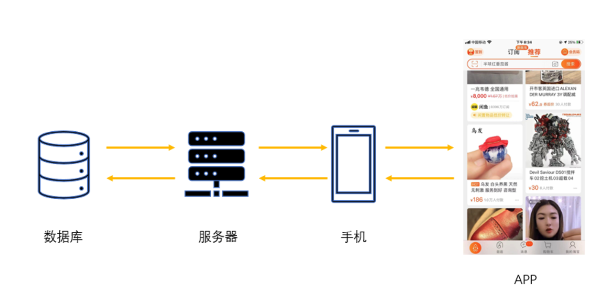
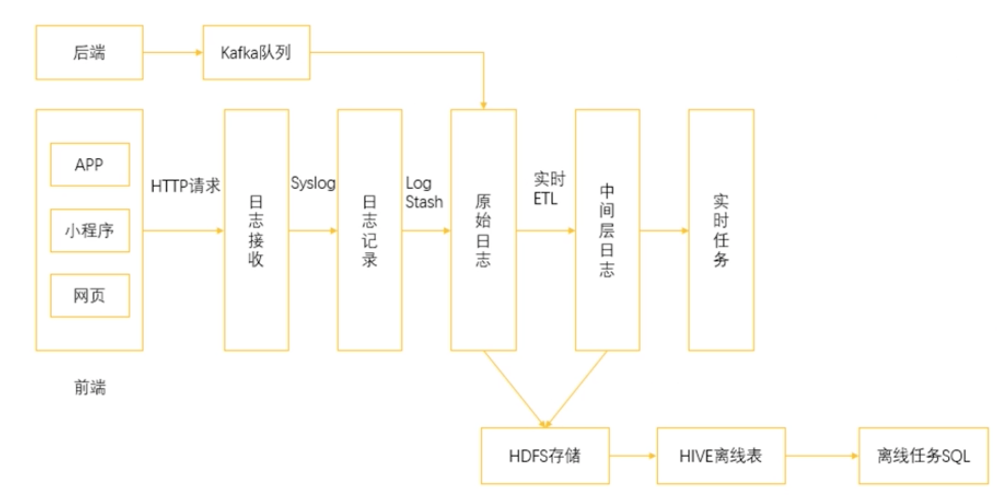

第三节 大数据中的数据来源
1、传感器
- 手机上的指纹开屏；
- 使用指纹进行支付；
- 微信步数的采集；
- 各种手环和运动手表等还可以监测心率；
2、爬虫采集
爬虫采集是通过一套程序去互联网上获取数据的方法。如果把一个互联网公司的数据划分成站内数据和站外数据，那么爬虫所获取的都属于站外数据。
3、日志采集
跟硬件传感器相比，日志记录可以看作是一种软件传感器，依托手机 App 就可以实现，这通常是现在的互联网公司获取“站内数据”的主流方式。下图就是一个典型的日志采集场景：
- 曝光事件
- 点击事件
- 用户滞留事件
在日志采集的数据中，通常又可以分成两种类型，一种称为事件，一种称为属性。

4、事件
事件是日志采集的重中之重
- 曝光事件
最简单的，一个 item 或者一个页面被展示出来，就称作曝光。在日志中记录曝光事件，就是记录每一个被展示出来的页面、商品或者内容。
- 点击事件
而点击，则是用户在 App 中的点击行为。通常，App 中的各种页面都是通过点击进行跳转的，
- 用户停留事件
这个事件记录的是一个用户在某个页面，或者某种情况下停留的时间。
- 在新闻推荐场景，使用新闻曝光和新闻点击可以计算某条新闻的点击率
- 在视频场景，使用点击和用户停留时间可以计算观看完成比
- 在交易场景，使用浏览点击和下单点击可以计算访购率
5、属性
与事件的连贯性不同，属性的收集往往是一次性的。当我们打开 App 时，我们使用的手机型号、网络制式、App 版本等信息都作为属性一次性地收集起来。
6、数据埋点
实现日志采集所使用的手段被称为数据埋点。
数据埋点就是在我们 App 的前端，也就是 UI 层的代码中插入一段用于监视用户行为事件的代码。当用户在 App 上发生对应的行为时，就会触发这段代码，从而上传该埋点中事先已经定义好的事件信息。
通过埋点收集到的信息：
- 可以作为监控，看到 App 的长期表现；
- 也可以作为基础原料，进行复杂的运算，用于用户标签、渠道转化分析、个性推荐等。
7、数据埋点的困难
- 来源众多
- 网页端、App端（安卓、iOS甚至微软客户端）、小程序
- 要把不同来源的同一处行为数据进行合并统计
- 页面众多
- 浏览、下单、支付
- 不同的页面，不同的形式
- 数据格式各不相同
- 不同的业务可能对于同一个页面的埋点存在不同的需求
8、埋点方式
手动埋点：
- 所谓的埋点就是程序员去增加一些代码
- 那么手动埋点自然是说程序员手动地去增加代码
好处：
- 没有其他的开发量，属于懒惰开发的一种情况
- 只有当需求提出的时候才去增加一个埋点
半自动埋点：
- 半自动的埋点通常出现在产品已经基本成熟的时期
- 程序员对于目前以及预期未来的业务流程进行了梳理
- 整理出一套常用的埋点方案，并把这套方案嵌入到业务代码中
- 如果有一些全新的功能或者页面上线，还是需要进行开发的
全自动埋点 ：
- 全自动埋点完全忽略了需求的存在，直接从最基本的事件和属性
-
把所有的东西都纳入埋点的范畴，事无巨细地记录下来
-
从根本上解决了埋点的需求，从此解放了双手
- 收集全量信息，网络开销大、存储成本高
- 大部分没用的信息则会导致后续数据处理的速度缓慢
9、进阶

- 在开发了埋点代码的前端环境中监控用户的行为，当用户产生行为的时候会通过 HTTP 请求把这些事件进行上报，进入到日志收集服务中。
- 日志收集服务会把这些日志转发到日志记录服务中，日志记录服务通过简单的日志加工汇总成为原始日志。
- 在这个位置，通过实时的 ETL 把原始日志处理成标准的格式，比如说汇总成我们所需要的用户 ID 与商品 ID的关联，以及是否有曝光、点击、下单、购买行为，并形成中间层日志，用于各种实时任务。
同时，原始日志和中间层日志通过 Kafka 消息队列同步到 HDFS 中以备后面的离线分析。
在上面的一个分支则是后端服务的日志采集，直接通过 Kafka 队列收集信息。
实际上，除了前端产生的日志，后端服务同样也会产生各种日志信息，不过这里多用于服务运行状态的检测。